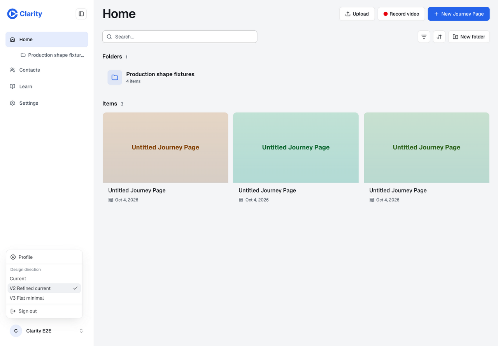
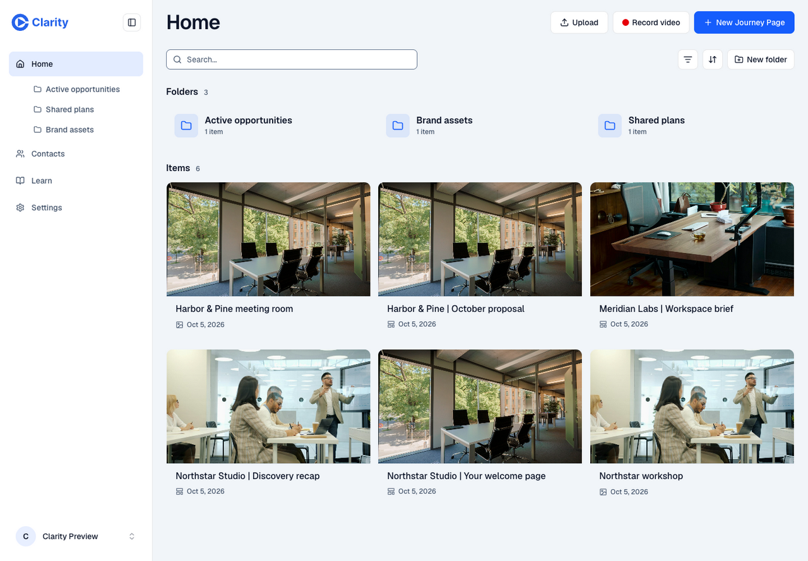
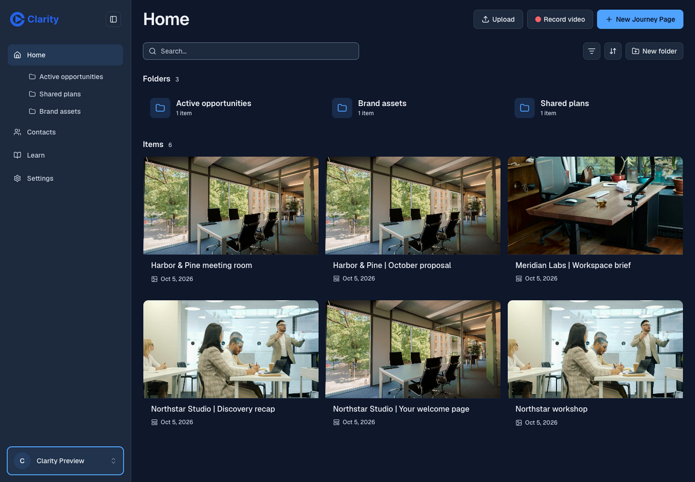
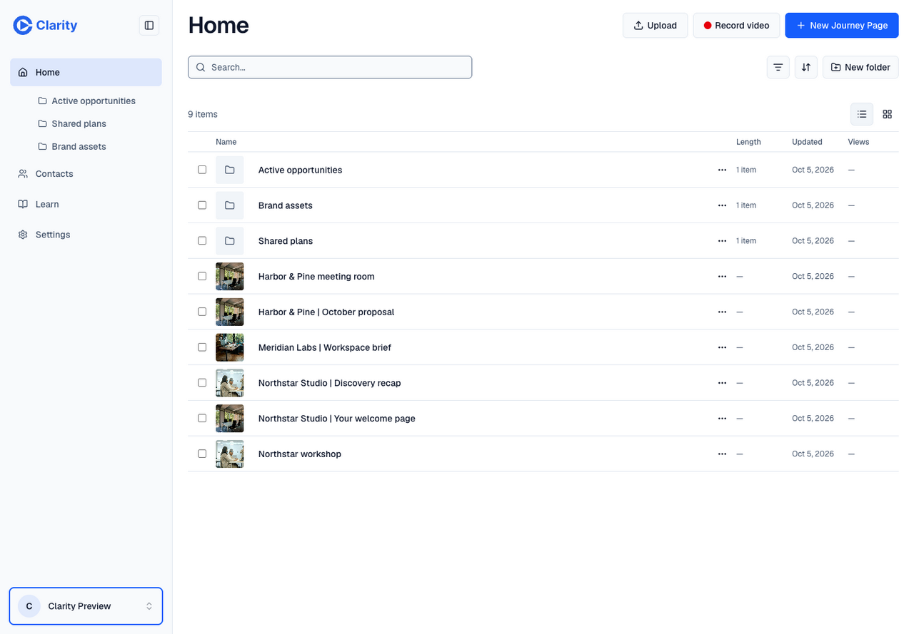
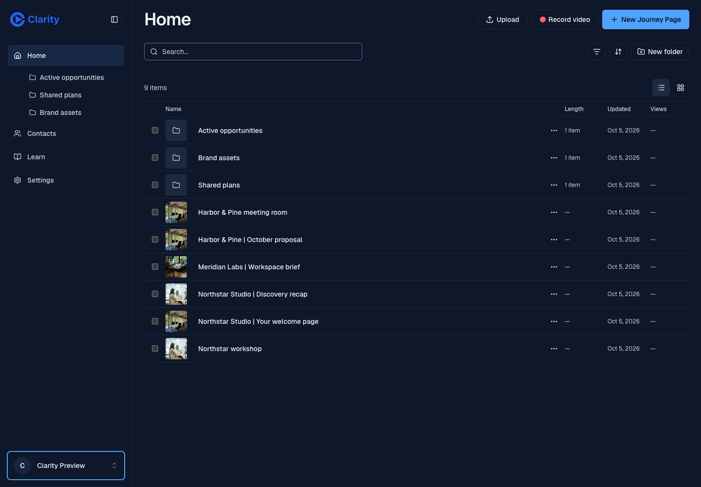

Clarity · Slate and Blue
Real screenshots from PR 1005. Fictional prospect pages and licensed photography fill the dedicated preview account.
Before · Sparse test library
V2 · Light
V2 · Dark
V3 · Light
V3 · Dark